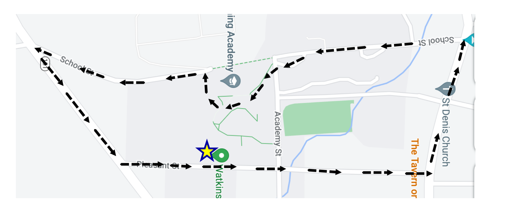

Health and Wellness - Schedule & Expectations
Typical Schedule (we start at 3:30 most days, so you may want to ask for a locker)
Mondays: 3:30pm-4:30pm
Tuesdays: 3:30pm-4:30pm
Wednesdays: 1:00pm - 2:00pm
Thursdays: 3:30pm - 4:30pm
Fridays: 3:30pm - 4:30pm
GENERAL EXPECTATIONS
Check-in with Mr. Shubleka at the start time.
Plan to participate in health and wellness for 1 hour (participation = exercise)
Dress code: purple and grays (compression pants/shorts/leggings are OK)
Food & drink: bring your water bottle
Equipment: Use wet wipes to clean after use; put equipment back in place.
Cell phones / devices: for music listening only. Use headphones.
Plan to work out on the upper floor only, where the fitness center is located.
Jogging around campus is permissible as long as you sign out and sign back in with Mr. Shubleka. A map of the campus loop is below.
